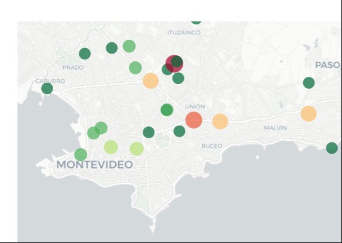

Análisis de Siniestros de Tránsito en Montevideo

Resumen del proyecto
Los siniestros de tránsito son un problema importante en Montevideo, y entender dónde, cuándo y cómo ocurren es clave para poder prevenirlos. Este proyecto surgió de esa inquietud: poder analizar los datos reales de siniestros para encontrar patrones que no son evidentes a simple vista.
Trabajé con datos abiertos de la Intendencia de Montevideo del año 2022, que registran cada persona lesionada con información sobre la fecha, hora, edad, sexo, tipo de vehículo, gravedad y ubicación geográfica. Este fue mi primer proyecto dentro de la especialización, en la materia Fundamentos de Programación para Ciencia de Datos.
El objetivo era hacer un análisis exploratorio completo: limpiar los datos, visualizarlos de distintas formas y sacar conclusiones. Usé Python con Pandas para la manipulación de datos, Matplotlib y Seaborn para gráficos estáticos, y Plotly para mapas interactivos. También apliqué pruebas estadísticas como Chi-cuadrado y V de Cramér para medir la relación entre variables categóricas.
Lo que encontré fue bastante revelador: los miércoles y las tardes son los momentos de mayor riesgo, los motociclistas representan casi el 58% de los siniestros en zona urbana, y los hombres están involucrados de forma desproporcionada en todas las categorías. Los puntos críticos se concentran en barrios como Centro, Cordón y Tres Cruces. Con estos resultados pudimos formular recomendaciones concretas orientadas a políticas de seguridad vial.